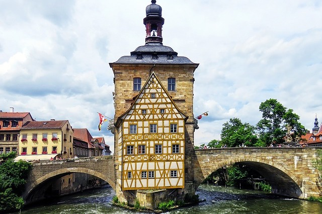
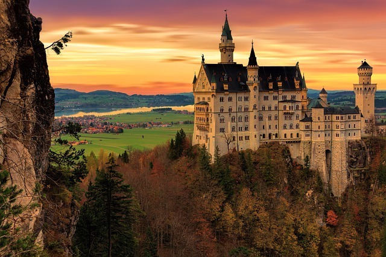
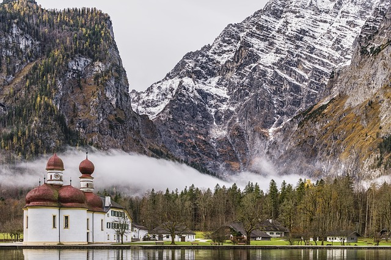
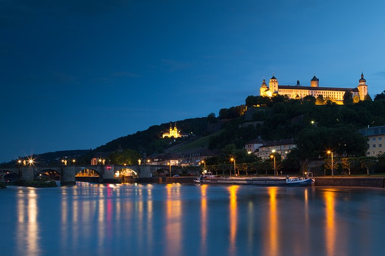

Das Radwanderland Bayern
Bayern bietet eine Vielzahl an Randwanderwegen, die sich durch das gesamte Bundesland ziehen und die Städte untereinander verbinden. Durch diese ausgewiesenen Radrouten können Besucher und Einwohner ihre Umgebung mit dem Fahrrad entdecken und das Land Bayern von einem anderen Blickwinkel kennenlernen. Auf dieser Homepage werden Ihnen vier beliebte Fernradwegrouten präsentiert. Neben Informationen zu den Charakteristika der Strecken erhalten Sie ebenfalls Tipps zu Sehenswürdigkeiten und Attraktionen entlang der Routen. Nähere Informationen zu den jeweiligen Stationen der Radfernwege können ebenfalls abgerufen werden. Wir wünschen Ihnen und ihren Lieben viel Spaß beim Stöbern und hoffen, dass wir Sie für eine Radtour entlang der Radfernwege Bayerns begeistern können.
Frankenradweg
Der Frankenradweg zieht sich mit einer Länge von 74 km von Volkach bis nach Bamberg. Nach einem leichten Anstieg bis nach Handthal zieht sich der Weg entlang wunderschöner Wiesen und Wälder bis nach Bamberg.
Romantische Straße
Der Fernradweg der romantischen Straße startet in Füssen nahe des berühmten Schloss Neuschwanstein. Auf einer Länge von insgesamt 504 km zieht sich der Radfernweg quer durch Bayern bis nach Würzburg.
Bodensee - Königssee
Der Radfernweg vom Bodensee bis zum Königssee startet im schönen Lindau am Bodensee und zieht sich über eine Gesamtlänge von 423 km durch den südlichen Teil Bayerns bis nach Berchtesgaden.
Mainradweg
Der Mainradweg hat seinen Startpunkt in Kahl am Main, nahe Frankfurt a.M. in Hessen. Über eine Strecke von 449 km verläuft der Weg durch Würzburg und Bamberg bis nach Bayreuth.